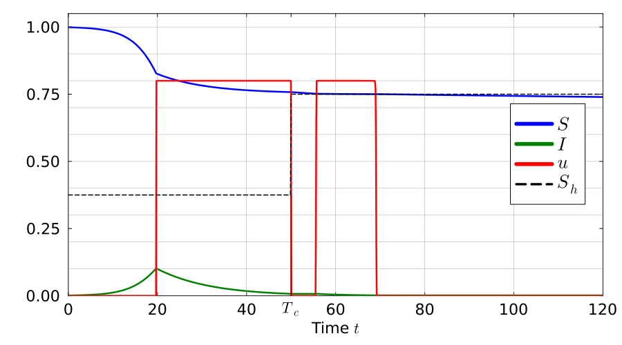
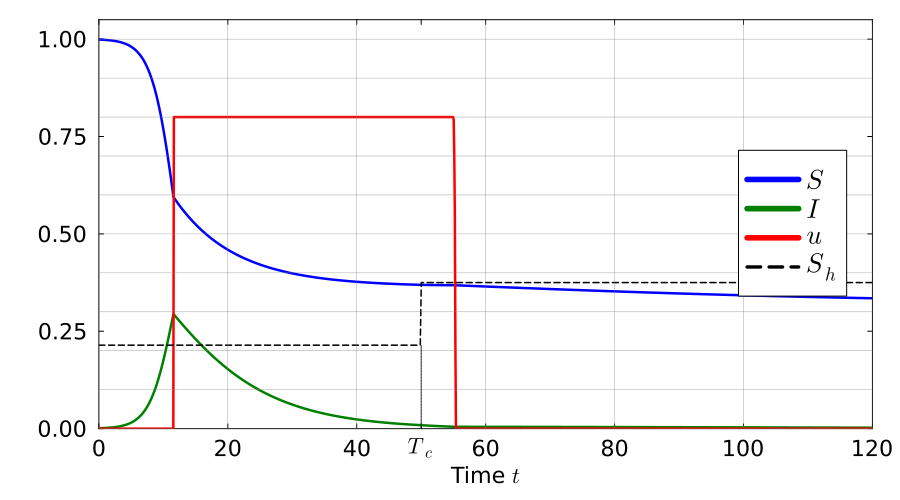
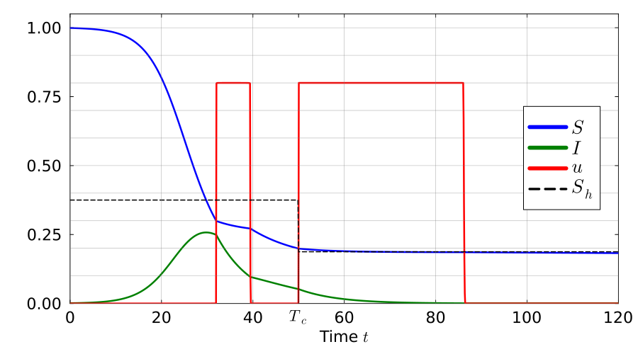
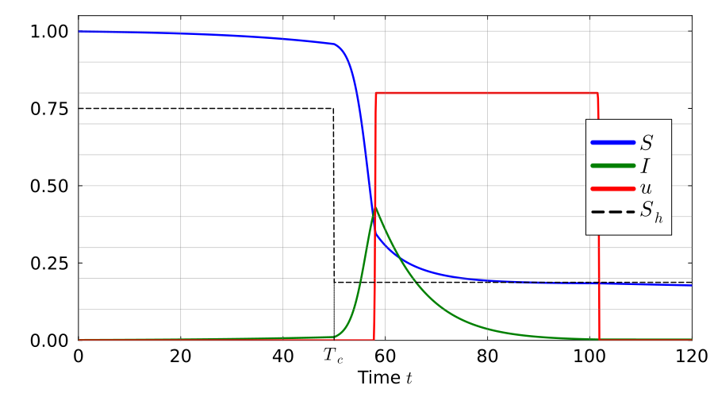

using OptimalControl
using NLPModelsIpopt
using Plots
using Plots.PlotMeasures
using LaTeXStrings
using RootsWe consider a piecewise constant transmission rate that is given by
\[\beta(t) = \begin{cases} \beta_1, \quad \text{if } t < T_c \\[5pt] \beta_2, \quad \text{if } t > T_c, \end{cases}\]
Since β is discontinuous, we use an augmentation technique, which allows to rewrite trajectories defined over [0,Tc] and [Tc,T] in a common interval [0,1]. The variable change is the following:
\[\left\{ \begin{array}{l} (S_1(s), I_1(s), C_1(s)) = (S, I, C)(sT_c), \\[0.3em] (S_2(s), I_2(s), C_2(s)) = (S, I, C)\big(s(T-T_c) + T_c\big), \\[0.3em] u_1(s) = u(sT_c), \quad u_2(s) = u\big(s(T-T_c) + T_c\big), \end{array} \right. \qquad s \in [0,1].\]
Hence, the (augmented) control system is given by
\[\left\{ \begin{array}{lcl} \dot S_1 &=& -T_c (1-u_1)\beta_1 S_1 I_1, \\[0.3em] \dot I_1 &=& T_c\big((1-u_1)\beta_1 S_1 I_1 - \gamma I_1\big), \\[0.3em] \dot C_1 &=& -T_c u_1, \\[0.3em] \dot S_2 &=& -(T-T_c)(1-u_2)\beta_2 S_2 I_2, \\[0.3em] \dot I_2 &=& (T-T_c)\big((1-u_2)\beta_2 S_2 I_2 - \gamma I_2\big), \\[0.3em] \dot C_2 &=& -(T-T_c)u_2, \end{array} \right. \qquad s \in [0,1].\]
Furthermore, the initial conditions write as follows
\[S_1(0)=S_0,\quad I_1(0)=I_0,\quad C_1(0)=K,\]
and to ensure continuity of the state variables, we impose the following constraints:
\[S_2(0)=S_1(1),\quad I_2(0)=I_1(1),\quad C_2(0)=C_1(1),\]
the terminal condition becomes
\[C_1(1)\ge 0,\quad C_2(1)\ge 0.\]
Thus, this procedure allows to reduce Problem 𝒫_S (with piecewise constant β) to an equivalent optimal control problem with smooth dynamics (given above) that writes
\[\sup_{(u_1(\cdot),u_2(\cdot)) \in \mathcal{U}} S_2(1)\]
with u₁(s), u₂(s) ∈ [0,ū] for a.e. s∈[0,1].
Finally, to recover the original state variables (S, I, C) and the control function u on [0,T], we use the inverse change of variables:
\[(S(t), I(t), C(t)) = \begin{cases} (S_1, I_1, C_1)\big(\tfrac{t}{T_c}\big), & t \in [0,T_c],\\[0.5em] (S_2, I_2, C_2)\big(\tfrac{t-T_c}{T-T_c}\big), & t \in [T_c,T], \end{cases}\]
\[u(t) = \begin{cases} u_1\big(\tfrac{t}{T_c}\big), & t \in [0,T_c],\\[0.5em] u_2\big(\tfrac{t-T_c}{T-T_c}\big), & t \in [T_c,T]. \end{cases}\]
tf = 700
τ = 50
γ = 0.15
Q = 35
umax = 0.8
β1 = [0.4, 0.7, 0.4, 0.2]
β2 = [0.2, 0.4, 0.8, 0.8]
S0 = 0.999
I0 = 0.0010.001function SIRocp2beta(T, S0, I0, Q, τ, β1, β2, γ, umax)
ocp = @def begin
t ∈ [0, 1], time
x = (S1, I1, C1, S2, I2, C2) ∈ R^6, state
ω = [u1, u2] ∈ R^2, control
S1(0) == S0
I1(0) == I0
C1(0) == Q
S2(0) - S1(1) == 0.0
I2(0) - I1(1) == 0.0
C2(0) - C1(1) == 0.0
C1(1) ≥ 0.0
C2(1) ≥ 0.0
0 ≤ u1(t) ≤ umax
0 ≤ u2(t) ≤ umax
0.0 ≤ I1(t) ≤ 1.0
0.0 ≤ S1(t) ≤ 1.0
0.0 ≤ I2(t) ≤ 1.0
0.0 ≤ S2(t) ≤ 1.0
ẋ(t) == [-τ * (1 - u1(t)) * β1 * S1(t) * I1(t),
τ * ((1 - u1(t)) * β1 * S1(t) * I1(t) - γ * I1(t)),
-τ * u1(t),
-(T-τ) * (1 - u2(t)) * β2 * S2(t) * I2(t),
(T-τ) * ((1 - u2(t)) * β2 * S2(t) * I2(t) - γ * I2(t)),
-(T-τ) * u2(t)
]
-S2(1) → min
end
sol = nothing
sol = solve(ocp, :direct, :adnlp, :ipopt;
disc_method = :midpoint,
grid_size=50,
init=sol,
tol=1e-8)
sol = solve(ocp, :direct, :adnlp, :ipopt;
disc_method = :midpoint,
grid_size=500,
init=sol,
tol=1e-8)
sol = solve(ocp, :direct, :adnlp, :ipopt;
disc_method = :midpoint,
grid_size=2000,
init=sol,
tol=1e-6)
sol = solve(ocp, :direct, :adnlp, :ipopt;
disc_method = :midpoint,
grid_size=2000,
init=sol,
tol=1e-9)
sol = solve(ocp, :direct, :adnlp, :ipopt;
disc_method = :midpoint,
grid_size=4000,
init=sol,
tol=1e-6)
sol = solve(ocp, :direct, :adnlp, :ipopt;
disc_method = :midpoint,
grid_size=4000,
init=sol,
tol=1e-8)
return sol
endSIRocp2beta (generic function with 1 method)sol1 = SIRocp2beta(tf, S0, I0, Q, τ, β1[1], β2[1], γ, umax)
sol2 = SIRocp2beta(tf, S0, I0, Q, τ, β1[2], β2[2], γ, umax)
sol3 = SIRocp2beta(tf, S0, I0, Q, τ, β1[3], β2[3], γ, umax)
sol4 = SIRocp2beta(tf, S0, I0, Q, τ, β1[4], β2[4], γ, umax)• Solver:
✓ Successful : true
│ Status : first_order
│ Message : Ipopt/generic
│ Iterations : 33
│ Objective : -0.15747350377927116
└─ Constraints violation : 6.695199950002007e-13
• Boundary duals: [-0.021572705010129582, 0.6791508488924164, 0.002101257269455521, -0.02617672232940827, -0.033799347824323145, 0.0021012572691699065, -2.8561440826445586e-13, -0.0021012572691699065]
# Function to recover trajectories from solution
function recover_trajectories(sol, T, τ)
S1(t) = state(sol)(t)[1]
I1(t) = state(sol)(t)[2]
C1(t) = state(sol)(t)[3]
S2(t) = state(sol)(t)[4]
I2(t) = state(sol)(t)[5]
C2(t) = state(sol)(t)[6]
u1(t) = control(sol)(t)[1]
u2(t) = control(sol)(t)[2]
# Define trajectories over [0, T]
S(t) = t ≤ τ ? S1(t/τ) : S2((t-τ)/(T-τ))
I(t) = t ≤ τ ? I1(t/τ) : I2((t-τ)/(T-τ))
C(t) = t ≤ τ ? C1(t/τ) : C2((t-τ)/(T-τ))
u(t) = t ≤ τ ? u1(t/τ) : u2((t-τ)/(T-τ))
return S, I, C, u
endrecover_trajectories (generic function with 1 method)# Function to create styled plot for a solution
function plot_solution(sol, T, τ, β1_val, β2_val, γ, problem_num; legend_position=:right)
# Recover trajectories
S, I, C, u = recover_trajectories(sol, T, τ)
# Time grid for plotting
t_plot = range(0, T, length=8000)
S_vals = S.(t_plot)
I_vals = I.(t_plot)
C_vals = C.(t_plot)
u_vals = u.(t_plot)
# Threshold function
Sh(t) = t < τ ? γ/β1_val : γ/β2_val
# Create plot
p = plot(t_plot, S_vals,
label=L"$S$",
xlabel=L"Time $t$",
linewidth=2.5,
legend=legend_position,
color=:blue,
framestyle=:box,
grid = false,
size=(900, 500),
dpi=300,
left_margin=8mm,
bottom_margin=6mm,
top_margin=3mm,
right_margin=5mm,
foreground_color_legend=:black,
background_color_legend=:white,
legend_foreground_color=:black,
legendfontsize=18,
tickfontsize=15,
guidefontsize=15)
plot!(t_plot, I_vals,
label=L"$I$",
linewidth=2.5,
color=:green)
plot!(t_plot, u_vals,
label=L"$u$",
linewidth=2.5,
color=:red)
plot!(t -> Sh(t),
label=L"$S_h$",
linestyle=:dash,
color=:black,
linewidth=1.5)
xlims!(0, 120)
ylims!(0, 1.05)
default_ticks = 0:20:120
tick_positions = sort(unique(vcat(collect(default_ticks), τ)))
tick_labels = [t == τ ? L"$T_c$" : string(Int(t)) for t in tick_positions]
xticks!(tick_positions, tick_labels)
# Add vertical gridlines at all positions except τ
vline!(filter(x -> x != τ, tick_positions),
color=:gray,
linewidth=0.5,
alpha=0.7,
label="")
# Add horizontal gridlines
hline!(0:0.1:1.0,
color=:gray,
linewidth=0.5,
alpha=0.7,
label="")
plot!([τ, τ],
[0, γ / max(β1_val, β2_val)],
color = :black,
linestyle = :dot,
linewidth = 1.0,
label = false)
return p
endplot_solution (generic function with 1 method)case 1: $\beta_1 > \beta_2$ (two interventions)
p1 = plot_solution(sol1, tf, τ, β1[1], β2[1], γ, 1)
case 2: $\beta_1 > \beta_2$ (one interventions)
p2 = plot_solution(sol2, tf, τ, β1[2], β2[2], γ, 2)
case 3: $\beta_1 < \beta_2$ (two interventions)
p3 = plot_solution(sol3, tf, τ, β1[3], β2[3], γ, 3)
case 4: $\beta_1 < \beta_2$ (one interventions)
p4 = plot_solution(sol4, tf, τ, β1[4], β2[4], γ, 4)